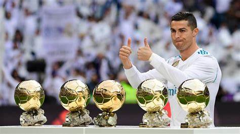
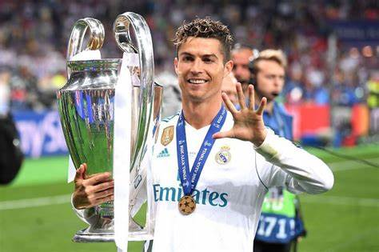
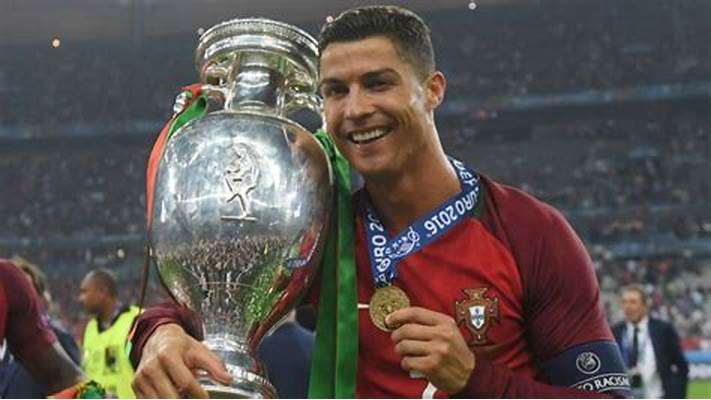
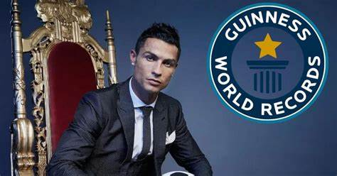
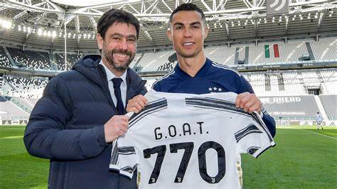

He has won five Ballon d'Or awards (2008, 2013, 2014, 2016, 2017).

❤ How many Champions League titles has Ronaldo won?
He has won five UEFA Champions League titles (one with Manchester United, four with Real Madrid).

❤ How many goals has Ronaldo scored in his career?
Ronaldo has scored a total of 921 career goals for both club and country
❤ Has Ronaldo won the FIFA World Cup?
No, but he won Euro 2016 and the UEFA Nations League 2019 with Portugal.

❤ What are some of Ronaldo’s major records?
☀ All-time top scorer for Real Madrid
☀ All-time top scorer in the UEFA Champions League
☀ Most international goals by a male player (recognized by FIFA)

❤ Is Ronaldo the GOAT ?
Cristiano Ronaldo's journey from a poor family in Madeira to becoming one of football's greatest legends is a testament to hard work, discipline, and resilience. Despite facing doubts, a heart condition at 15, and leaving home at 12, he never gave up. His relentless training, strict diet, and winning mentality keep him at the top, even in his late 30s. Beyond football, he’s generous, giving millions to charity. His story proves that success isn’t given—it’s earned through dedication and perseverance.

"Your love makes me strong, your hate makes me unstoppable."